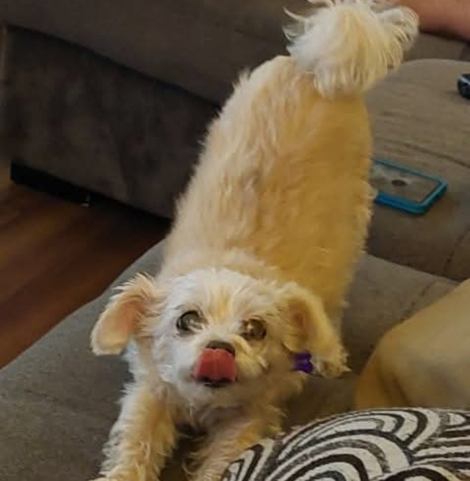
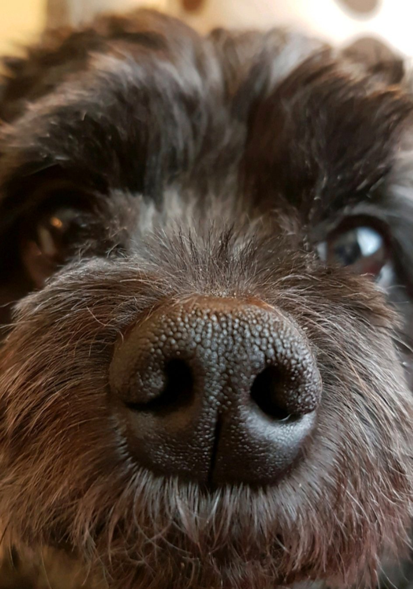

01
Understand their needs
We learn about their temperament, mobility, daily rhythm, medical history and the little things that help them feel secure.
We help older dogs find calm, loving homes where they can enjoy their next chapter. Through thoughtful matching and a community-backed care fund, we aim to make welcoming a senior dog feel more possible for families with limited financial resources.

Match at their pace.
Personality, comfort and routine come first.
Plan for senior care.
Support for changing health needs.
A circle of kindness.
Families, veterinary teams and supporters.
Senior dogs have individual histories, habits and care needs. We take time to understand each dog and each household, then work to build a support plan that can grow with them.
We learn about their temperament, mobility, daily rhythm, medical history and the little things that help them feel secure.
We consider stairs, flooring, other pets, time at home and the kind of companionship a family can offer. A calm, compatible home matters more than appearances.
We aim to connect families with a dedicated care fund and participating veterinary and grooming partners, subject to the written plan, program terms and available funding.

Older dogs can need a little more thoughtful planning: regular check-ins, dental care, mobility support and help managing age-related changes. We make those needs part of the conversation from the start.
Senior dogs deserve more than a warm bed on day one. Donations and sponsorships help us plan for ongoing veterinary care, comfort and quality of life as each dog ages.
We aim to build a dependable pool of support for preventive care and age-related needs, with transparent stewardship and clear guidelines for families and care partners.
People who believe every dog deserves a healthy life.
Corporate sponsors investing in a practical, lasting impact.
Veterinary teams and groomers helping make care accessible.
Each dog's care plan will be explained in plain language, with participating providers and eligible services identified up front.
Illustrative categories only. Coverage is subject to available funds, partner agreements, eligibility rules and the written care plan. The fund is not insurance and should not be represented as unlimited coverage.
Senior dogs can thrive with people who value companionship, patience and a gentler routine. We want to make that bond more accessible to families with limited financial resources, without asking anyone to explain or defend their circumstances.
We welcome people who can offer a safe, patient and committed home. We look at the whole picture — household routine, stairs and access, other pets, time at home and the individual dog's comfort and care needs — rather than income alone.
We will never promise a placement before we understand the dog's needs and the family's circumstances. A good match should feel manageable, safe and kind for everyone.
We are building a network of compassionate clinics, mobile-care providers and groomers who understand the value of gentle, age-aware care for dogs in families with limited financial resources.
Partner arrangements can be designed around agreed services, appointment processes, rates, payment terms and the needs of each dog. We respect your team's time and expertise — and want a relationship that works for everyone.
Become a care partnerYour support can help an older dog enjoy comfort, companionship and appropriate care in a loving home.
Sponsorship packages, recognition and reporting can be tailored to your organization. All contributions are subject to the foundation's governance and fund policies.
Discuss sponsorship →Help us give older dogs the comfort, security and companionship they deserve.
Trust starts with knowing exactly what the program offers.
Whether you're hoping to welcome a dog, fund a care plan, or offer professional services, we'd love to hear from you.
Choose the reason you're reaching out and leave a few details. This sample page is ready to connect to your foundation's real email address or application system.
Please don't include private financial, medical or other sensitive information in this first message.